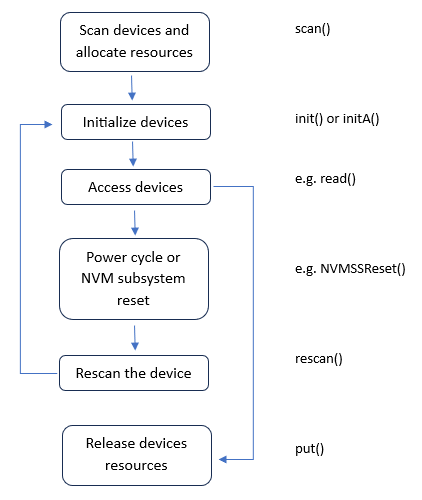

Peanut ntp-io
Last updated: 2023/11/5
Basic Flow
The following flow shows the basic flow from scanning devices to
release resources.
The scan() function is used to scan NVMe devices which are set by
the utility sdut.
The init() function is used to initialize the device controllers.
Besides controller initializations, Admin Submission/Completion queues
are created and IO Submission/Completion queues are also created by init()
function.
The initA() function could be used to initialize the controller, too, but
the initA() function create Admin Submission/Completion queues only;
no IO Submission/Completion queue is created by initA().
While there is no more access to the device, the put() function shoud be
called to release resources.
Reinit Flow-1
The NVMe extension module provides function to reset the controller. Below flow
shows the flow to re-initialize the controller after the controller is reset but
the PCIe PHY link is not re-established.
The function level reset (flReset()) and controller reset (cntlReset()) do
not cause the PCIe PHY link re-established.
Reinit Flow-2
